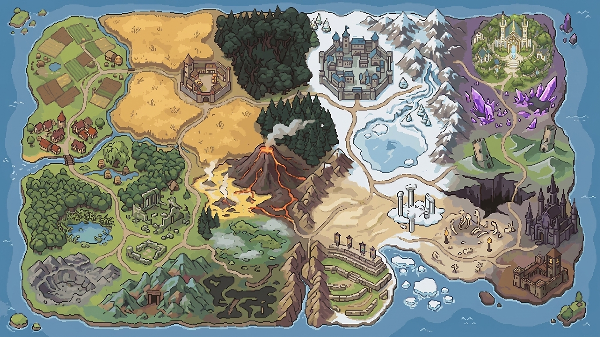

แผนที่โลก

แผนที่รวมของโลก — แมพย่อยทั้งหมดจัดอยู่ตามภูมิภาคด้านล่าง
แมพย่อยทั้งหมด
% = สัดส่วนมอนในแมพนั้นที่มีลักษณะ/ธาตุดังกล่าว (จาก Threats)

แผนที่รวมของโลก — แมพย่อยทั้งหมดจัดอยู่ตามภูมิภาคด้านล่าง
% = สัดส่วนมอนในแมพนั้นที่มีลักษณะ/ธาตุดังกล่าว (จาก Threats)